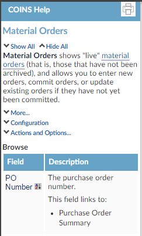

Toggle Help, or press Ctrl+Shift+>.
Toggle Help, or press Ctrl+Shift+>.
To "turn on" the Help, move the mouse pointer over your profile picture and in the user menu, click Toggle Help, or press Ctrl+Shift+>.
A typical layout of the Help would include the title of the function you are in, followed by a description of what the function does and what it can offer. Any extra information related to the function follows in the form of a link.
The next section of the Help describes fields in the function or workbench. If there are selectors, help for these is also displayed (selectors are usually drop down menus that require you to choose an option to tell
If there is extra information related to a selector, field or function, you will see a link labelled More... Click this to view the information, and click it again to hide it.
You may also get extra information relating to configuration or parameters that affect the use or contents of a field or function; click the Configuration link to view these. To hide the configuration information, click the link again.
If there are any More... or Configuration links in the help you are looking at, there are also two links at the top: Show All and Hide All. Clicking Show All displays all additional information related to the screen you are in. Clicking Hide All hides the additional information.
You can print out the side-frame help using the  button at the top of the help frame.
button at the top of the help frame.
To open the  Documentation.
Documentation.
You can custom